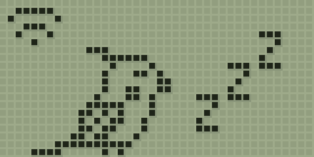
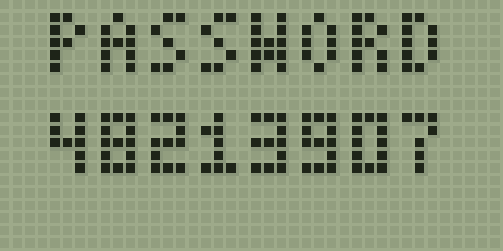

POCKET COCKATIEL · No. 001
Okame
オカメ
Instruction booklet
とりあつかい せつめいしょ
A tiny cockatiel lives in this egg. It sleeps until it finds a Wi-Fi it knows, then it wakes up hungry, curious and ready to whistle.

for Haruki
× from Matthieu


A NOTE FOR YOU · おてがみ
Dear Haruki, おてがみ
DRAFT · REPLACE WITH YOUR OWN WORDS
I know how much you love cockatiels, so I made you one that fits next to your laptop.
It hatched just for you. Feed it, scritch it, cover its cage at night, and teach it a song:
it will remember it, and whistle it back to you.
With love,
Matthieu
JAPAN × BELGIË
HANDMADE WITH ♥
In the box
The Okame egg (with the bird inside) · a USB-C cable to your MacBook · this booklet.
The egg plugs into the cable's USB end at its narrow side. Keep it on the desk next to your laptop; it is happiest where it can see you.
— 2 —
GETTING STARTED · はじめかた
Wake up your bird はじめかた
Plug it in
Put the cable on the egg's plug and the other end in your MacBook. The screen lights up: an egg, fast asleep.

Join its Wi-Fi
After a minute it shows JOIN OKAME-… and then a PASSWORD. On your iPhone, open Wi-Fi settings and join that network with that password.

Add your Wi-Fi
The Okame page opens by itself (if not, open 192.168.4.1 in Safari). Under Settings, pick your home Wi-Fi, type its password and tap Add network. Add your phone's hotspot too if you like.

It hatches!
Once it's on your Wi-Fi, the egg wobbles, cracks… and out comes your chick. Open the page again and give it a name. The page's address becomes name.local: add it to your Home Screen.


No Wi-Fi it knows? Then the bird simply sleeps (a little Wi-Fi sign blinks). Time still passes, but at most 12 hours count, so it can't come to harm while you're away.

— 3 —

HELP · こまったときは
If something's odd こまったときは
| ? | Stuck on the Wi-Fi sign. It can't find a saved network. Wait a minute for JOIN OKAME-… and add your Wi-Fi again. iPhone hotspot? Turn on Maximise Compatibility and keep the hotspot screen open. |
| ? | Can't open name.local. Make sure your phone is on the same Wi-Fi. The name is shown at the bottom of the page. |
| ? | Settings code expired? Tap Show code on the egg again. Each code works for 2 minutes. |
| ? | “UPDATE” with a bar. New feathers! The bird is updating itself. Leave it plugged in for a minute. |
| ? | It flew away. Tap Hatch a new egg on the phone page. |
Updates
Okame checks for new versions once a day, while it's idle. Updates are signed, so it only installs genuine ones, and if one ever misbehaves it goes back to the previous version by itself.
Good to know
Keep it dry and out of hot sun. The egg is 3D-printed PLA. Its brain is a tiny ESP32-S3 computer; its screen is 160 × 80 pixels, drawn as 40 × 20 big dots. It has no buttons on purpose: everything happens on your phone.
ありがとう · Dankjewel · Thank you
FROM ONE LITTLE BIRD, BETWEEN JAPAN AND FLANDERS


 — 4 —
— 4 —


 Egg
Egg Chick
Chick Juvenile
Juvenile Adult
Adult